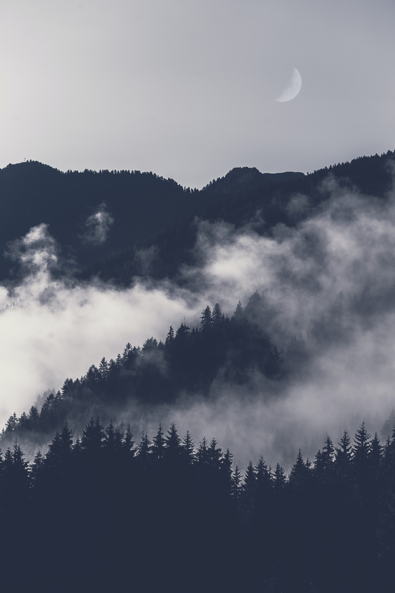
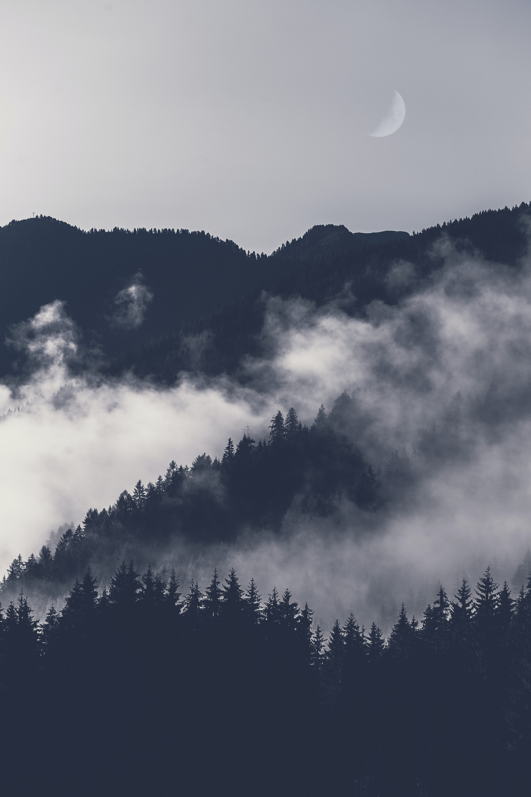

Who am I?
My name is Jordan Johnson and I was born February 20, 1993. While my family was doing well finiancial at the time of my birth,
they fell into financial ruin during the recession of 2008. Nevertheless, my parents and relatives endeavored to give me a proper upbringing in a conservative household.
I was considered intelligent, though I had trouble learning at the local schools. I was suffering from dyslexia. Because of this,
I was went to private schools and received a diploma, which was the equivalent of an elevnth-grade education.
I was a nature lover; this was reflected throughout my photos that I took once I became a photographer.
When I discovered the Yosemite and Sierra, I began taking photos with a Hasselblad Kodak film camera that my parents had given me trying to replicate those photos. I joined the Sierra Club in 2010.
By 2012, my photographs were appearing in the club's bulletin. I began giving tours through the club and took pictures
of the people and places that they visited. It was on one of these trips that I took my famous photograph: The eye of the storm
. I also met Mr. John M. Watts who was a supporter of the arts at this time and he assisted me in preparing his first professional portfolio.
 
